정보보안기사 (2014-09-27 기출문제)
1과목: 시스템 보안
1. 다음 중 운영체계 5계층이 순서대로 나열된 것은?
- 메모리관리-프로세스관리-프로세서관리-주변장치관리-파일관리
- 프로세스관리-주변장치관리-파일관리-프로세서관리-메모리관리
- 프로세서관리-메모리관리-프로세스관리-주변장치관리-파일관리
- 파일관리-메모리관리-프로세스관리-프로세서관리-주변장치관리
(정답률: 63%)

2. 사용자가 작성한 프로그램을 운영체계에 실행하도록 제출하면 운영체제는 이를 제출받아 프로세스를 만든다. 이때 생성된 프로세스의 주소영역을 구성하는 요소를 올바르게 나열한 것은?
- 데이터영역-스택영역-텍스트영역
- 텍스트영역-스택영역-데이터영역
- 데이터영역-텍스트영역-스택영역
- 텍스트영역-데이터영역-스택영역
(정답률: 44%)
3. 다음 중 운영체제 발전 흐름에 대한 설명으로 올바르지 못한 것은?
- 다중처리시스템 : 여러 개의 CPU와 여러 개의 주기억장치를 이용하여 여러 개의 프로그램을 처리하는 방식이다.
- 시분할시스템 : 여러 명의 사용하는 시스템에서 각 사용자는 독립된 컴퓨터를 사용하는 느낌으로 사용한다.
- 다중프로그램 : 하나의 CPU와 주기억장치를 이용하여 여러개의 프로그램을 동시에 처리하는 방식이다.
- 분산처리시스템 : 여러 개의 컴퓨터를 통신회선으로 연결하여 하나의 작업을 처리하는 방식을 말한다.
(정답률: 39%)
4. 다음 중 윈도우 NTFS 파일 시스템에 대한 설명으로 올바르지 않는것은?
- NTFS 구조는 크게 VBR영역, MFT영역, 데이터영역으로 나눈다.
- 이론적인 최대 NTFS 파일 크기는 16EB이다.
- 실제 최대 NTFS파일 크기는 16TB이다.
- 기본 NTFS보안을 변경하면 사용자마다 각기 다른 NTFS보안을 설정할 수 있다.
(정답률: 25%)
5. 다음 올바르게 설명하고 있는 것은 무엇인가?
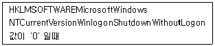
- 시스템 정상적인 종료로 인하여 대화상자에 종료버튼을 삭제 처리한다.
- 시스템 비정상적인 종료로 인하여 대화상자에 종료버튼을 비활성화 처리한다.
- 시스템 정상적인 부팅하여 대화상자에 종료버튼을 삭제 처리한다.
- 시스템 정상적인 부팅하여 대화상자에 종료버튼을 비활성화 처리한다.
(정답률: 27%)
6. 윈도우즈 운영체제에서 네트워크상 관리목적으로 기본 공유폴더를 삭제하는 알맞은 명령어는 무엇인가?
- net Share_Dir / delete
- net share Share_Dir /delete
- net delete
- net share delete
(정답률: 72%)
7. 다음 중 레지스트리 편집기 종류에 대한 설명으로 올바르지 못한 것은?
- HKEY_CLASSES_ROOT : OLE데이터 확장자에 대한 정보 및 파일과 프로그램간 연결 정보가 포함되어 있다.
- HKEY_CURRENT_USER : 컴퓨터 환경정보가 저장되어 있으며, 다수 사용자가 사용할 경우 각 사용자별 프로파일이 저장되어 있다.
- HKEY_USERS : 각 사용자 정보들이 저장되어 있다.
- HKEY_CURRENT_CONFIG : HKEY_LOCAL_MACHINE에 서브로 존재하는 Config 내용이 담겨져 있다.
(정답률: 22%)
8. 다음 중 인터넷 익스플로러 브라우저의 보안에 대한 설명으로 올바르지 못한 것은?
- 임시 인터넷파일 저장위치를 변경 할 수 있다.
- 방문한 웹사이트 저장 목록 일자를 변경할 수 있다.
- 고급 탭에서 HTTP1.1 사용을 설정 할 수 있다.
- 압축된 개인정보 취급방침 없는 타사의 쿠키를 차단하는 설정은 ‘보통’으로 하면 된다.
(정답률: 6%)
9. 다음 중 HTTP상태 프로토콜 값으로 연결이 올바른 것은?
- 200 : OK
- 204 : No Content
- 400 : Bad Request
- 500 : Server Busy
(정답률: 46%)
10. 다음 스캐닝 방법 중에서 그 성격이 다른 하나는?
- FIN 스캐닝
- X-MAS 스캐닝
- NULL 스캐닝
- SYN 스캐닝
(정답률: 50%)
11. 다음 보기를 보고 올바르게 설명하고 있는 것을 고르시오.
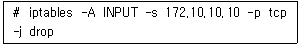
- 외부 ip 172.10.10.10에서 들어오는 패킷을 차단한다.
- 내부 ip 172.10.10.10에서 나가는 패킷을 차단한다.
- 외부 ip 172.10.10.10에서 나가는 패킷을 차단한다.
- 내부 ip 172.10.10.10에서 들어오는 패킷을 차단한다.
(정답률: 34%)
12. 다음 중 HTTP/1.1 요청방식이 아닌 것은?
- GET
- DELETE
- TRACE
- PUSH
(정답률: 25%)
13. 다음 중 운영체제 5단계에 포함되지 않는 것은?
- 메모리관리
- 주변장치 관리
- 파일관리
- 사용자관리
(정답률: 67%)
14. 다음 중 버퍼링과 스풀링에 대한 설명으로 올바르지 못한 것은?
- 버퍼링과 스풀링은 CPU 연산과 I/O 연산을 중첩시켜 CPU의 효율을 높이기 위하여 사용한다.
- 버퍼링은 단일사용자 시스템에 사용되고, 스풀링은 다중사용자 시스템에 사용된다.
- 버퍼링은 디스크를 큰 버퍼처럼 사용하고 스풀링은 주기억 장치를 사용한다.
- 버퍼링과 스풀링은 큐 방식의 입출력을 수행한다.
(정답률: 39%)
15. 다음 중 커널에 대한 설명으로 올바르지 못한 것은?
- 커널에는 커널모드와 사용자모드가 있다.
- 운영체제의 핵심을 커널이라 부른다.
- 응용프로그램에 커널 서비스를 제공하는 인터페이스를 ‘시스템 콜 인터페이스’라 한다.
- 하드웨어 장치를 사용할 경우 사용자모드에서 사용된다.
(정답률: 53%)
16. 다음 중 취약성 점검도구가 아닌 것은 무엇인가?
- NESSUS
- SARA
- NIKTO2
- TRIPWIRE
(정답률: 80%)
17. 다음 보기에 해당하는 로그 파일은 무엇인가?
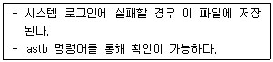
- wtmp
- btmp
- utmp
- pact
(정답률: 62%)
18. 다음 중 버퍼오버플로우 대한 설명으로 올바르지 못한 것은?
- 버퍼에 저장된 프로세스 간의 자원 경쟁을 야기해 권한을 획득하는 기법으로 공격하는 방법이다.
- 메모리에 할당된 버퍼의 양을 초과하는 데이터를 입력하여 프로그램의 복귀 주소를 조작하는 기법을 사용하여 해킹을 한다.
- 스택 버퍼오버플로우와 힙 오버플로우 공격이 있다.
- 버퍼오버플로우가 발생하면 저장된 데이터는 인접한 변수영역까지침범하여 포인터 영역까지 침범하므로 해커가 특정코드를 실행하도록 하는 공격기법이다.
(정답률: 53%)
19. 다음 공격기법을 무엇이라 하는가?
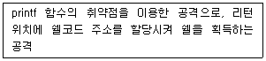
- 버퍼오버플로우공격
- 스니핑 공격
- 포맷스트링공격
- 세션하이젝킹 공격
(정답률: 48%)
20. 다음 리눅스 iptables에서 chain 형식으로 사용이 옳지 않은 것은?
- INPUT
- FORWORD
- OUTPUT
- DROP
(정답률: 53%)
2과목: 네트워크 보안
21. VPN 프로토콜 중 IPSEC에서 암호화 기능을 담당하는 프로토콜은?
- AH
- ESP
- IKE
- PPTP
(정답률: 64%)
22. 다음 중 CIDR 기법을 사용하지 않는 라우팅 프로토콜은?
- RIP v1
- RIP v2
- EIGRP
- OSPF
(정답률: 0%)
23. 다음 중 DDOS공격 프로그램이 아닌 것은 무엇인가?
- TRINOO
- TFN
- Stacheldraht
- Teardrop
(정답률: 63%)
24. 다음에서 설명하고 있는 네트워크 공격방법은 무엇인가?
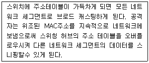
- ARP스니핑
- ICMP Redirect
- ARP스푸핑
- 스위치재밍
(정답률: 42%)
25. 다음 중 TCP신호를 보내는 Flag 종류 연결로 올바르지 못한 것은?
- SYN – 요청 Flag로써 초기에 세션을 설정하는데 사용된다.
- ACK – 요청에 대한 응답을 하는 Flag이다.
- FIN – 세션을 종료시키기 위한 Flag이다.
- RST – 패킷을 보내면 3way핸드쉐이킹 후 Closed모드에 들어간다.
(정답률: 69%)
26. 다음 그림에서 IDS 위치로 올바른 것은?
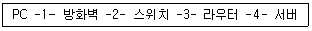
- (1)
- (2)
- (3)
- (4)
(정답률: 37%)
27. 다음 중 세션하이젝킹에 이용되는 툴(도구)은 무엇인가?
- HUNT
- TRINOO
- NIKTO2
- TRIPWIRE
(정답률: 18%)
28. IDS에서 오용탐지를 위해 쓰이는 기술이 아닌 것은?
- 전문가시스템(expert System)
- 신경망(neural networks)
- 서명분석(signature analysis)
- 상태전이분석(State transition analysis)
(정답률: 17%)
29. 다음에서 설명하고 있는 VPN 키 관리 기법은 무엇인가?
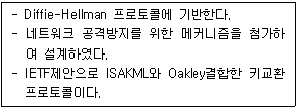
- ISAKMP
- OAKLEY
- IKE
- OCSP
(정답률: 15%)
30. 다음 IPS종류 중 어플리케이션게이트웨이 방식 설명으로 옳지 않은것은?
- 내부와 외부 네트워크가 프록시 서버를 통해서만 연결이 된다.
- 각 서비스별 프록시 데몬이 존재한다.
- 1세대 방화벽에 속 한다
- 일부 서비스에 대해 투명성을 제공하기 어렵다.
(정답률: 30%)
31. 다음 중 IPTABLES에서 새로운 규칙을 출력하는 옵션은?
- -p
- -D
- -A
- -L
(정답률: 56%)
32. ICMP메시지 종류중에서 TYPE 5인 메시지는 무엇인가?
- Echo Reply
- Redirect
- Echo Request
- Time Exceed
(정답률: 17%)
33. 다음 보기에서 설명하고 있는 네트워크 공격기법은 무엇인가?
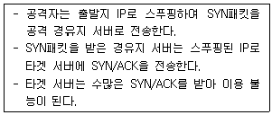
- dos
- ddos
- drdos
- syn flooding
(정답률: 10%)
34. 다음 중 VPN에 대한 설명으로 올바르지 못한 것은?
- SSL VPN은 웹 어플리케이션 기반으로 구성된다.
- SSL VPN이 설치가 더 용이하다.
- IPSEC VPN은 시간과 장소에 제약이 없다.
- IPSEC VPN은 규정된 사용자, 제한된 사용자만 수용한다.
(정답률: 62%)
35. 다음에 나열된 공격이 사용되는 융복합 서비스는 무엇인가?
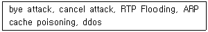
- IPTV
- VoIP
- Smart TV
- CCTV
(정답률: 54%)
36. VPN프로토콜 중 IPSEC에서 암호화 기능을 담당하는 프로토콜은?
- AH
- IKE
- ESP
- OCSP
(정답률: 39%)
37. 다음 보기는 어떤 공격에 대한 설명인가?
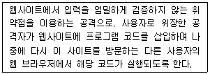
- 세션하이재킹
- 소스코드 삽입공격
- 사이트간 스크립팅(xss)
- 게시판 업로드공격
(정답률: 64%)
38. 다음 중 IPSec에 대한 설명으로 올바르지 못한 것은?
- ESP는 헤더의 기밀성을 제공하기위해 사용된다.
- AH프로토콜은 메시지의 인증과 무결성을 위해 사용된다.
- IKE프로토콜은 SA를 협의하기위해 사용된다.
- IPSec은 전송계층 레이어에서 작동된다.
(정답률: 40%)
39. 다음에서 설명하고 있는 기술은 무엇인가?
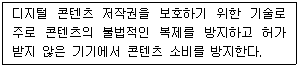
- DLP
- DRM
- IDS
- VPN
(정답률: 73%)
40. 공격자가 자신이 전송하는 패킷에 다른 호스트 IP주소를 담아서 전송하는 공격은?
- 패킷스니핑
- 포맷스트링
- 스푸핑
- 버퍼오버플로우
(정답률: 43%)
3과목: 어플리케이션 보안
41. 다음에서 설명하고 있는 FTP공격 형태는 무엇인가?
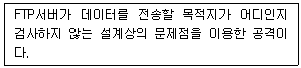
- 익명FTP공격
- FTP서버 자체 취약점
- 바운스공격
- 무작위 전송 공격
(정답률: 34%)
42. 메일 필터링 스팸어쌔신에서 스팸 분류기준이 아닌 것은?
- 헤더검사
- 본문 내용검사
- 주요 스팸 근원지와 비근원지 자동생성
- 첨부파일 검사
(정답률: 18%)
43. 다음 그림에 대한 ftp설명으로 올바르지 못한 것은?
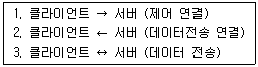
- 두 번째 접속은 서버에서 클라이언트로 한다.
- 서버는 21번 포트와 1024이후의 포트를 연다
- 첫 번째 접속은 21번 포트인 명령어 포트이다
- 서버는 1024이후의 포트를 모두 연다.
(정답률: 14%)
44. 다음 보기에서 설명하고 있는 전자투표 방식은?
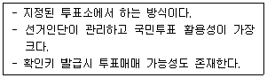
- 키오스크방식
- REV방식
- PSEV방식
- LKR방식
(정답률: 37%)
45. 다음 보기의 SMTP 송신자 인증 방식은 무엇인가?
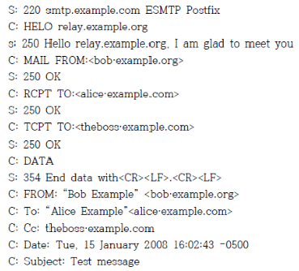
- HELO
- RCPT
- AUTH
- DATA
(정답률: 36%)
46. 데이터베이스 보안요구사항 중 비기밀 데이터에서 기밀 데이터를 얻어내는 것을 방지하는 요구사항은?
- 추론방지
- 접근통제
- 흐름제어
- 암호화
(정답률: 39%)
47. 웹 브라우저와 웹 서버 간에 안전한 정보 전송을 휘애 사용되는 암호화 방법은?
- PGP
- SSH
- SSL
- S/MIME
(정답률: 알수없음)
48. 다음 중 PGP에 대한 설명으로 올바르지 못한 것은?
- PGP는 메시지인증 기능도 지원한다.
- IDEA암호알고리즘을 이용하여 암호화 한다.
- 세션 키 로서 128비트 랜덤 키를 사용한다.
- 수신자는 세션 키를 자신이 생성한다.
(정답률: 40%)
49. 다음은 SET에서 사용하는 보안 메커니즘을 설명한 것이다. 다음의 내용에 해당하는 것은 무엇인가?
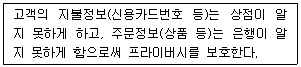
- 은닉서명
- 전자서명
- 이중서명
- 영지식증명
(정답률: 57%)
50. 전자화폐 지불방식이 아닌 것은?
- 온라인 지불
- 오프라인 지불
- 고액 지불
- 선불방식
(정답률: 56%)
51. PKI구조에 대한 설명 중 올바르지 못한 것은?
- 계층적 구조는 네트워크 구조에 비해 인증 경로 탐색이 어렵다.
- 네트워크 구조는 인증기관의 비밀 키 노출 시 해당 인증 도메인에만 영향을 미친다.
- 계층적 구조는 단일화된 인증 정책과 중앙 집중적인 조직체계에적절하다.
- 네트워크 구조는 계층적 구조에 비해 구조가 유연하여 기존 구축된 서로 다른 도메인 간 연결할 때 유리하다.
(정답률: 25%)
52. 다음 중 전자화폐시스템에 대한 일반적 모델로 프로토콜 구성이 올바르지 않은 것은?
- 예치 : 상점서버 - 금융기관
- 지불 : 상점서버 - 사용자
- 인출 : 사용자 - 금융기관
- 인증 : 지불서버 – 인증기관
(정답률: 50%)
53. 다음 중 SSL최하위 계층에 위치하고 있는 프로토콜은 무엇인가?
- Handshake
- Alert
- Record layer
- Change CipherSpec
(정답률: 25%)
54. 전자투표 요구사항에 포함되지 않는 것은?
- 정확성
- 단일성
- 합법성
- 독립성
(정답률: 48%)
55. 다운로드를 위한 게시판 파일을 이용하여 임의의 문자나 주요 파일명의 입력을 통해 웹 서버 홈 디렉토리를 벗어나 시스템 내부의 다른 파일로 접근하여 다운로드하는 공격은?
- CSS
- 파일다운로드
- 인젝션
- 쿠키/세션위조
(정답률: 63%)
56. 다음 중에서 SQL인젝션 공격에 대한 보호대책으로 거리가 먼 것은?
- 사용자 입력이 SQL 문장으로 사용되지 않도록 한다.
- 사용자 입력으로 특수문자의 사용은 제한하도록 한다.
- 원시 ODBC오류를 사용자가 볼 수 없도록 코딩해야한다.
- 테이블 이름, SQL구조 등이 외부 HTML에 포함되어 나타나도록한다.
(정답률: 54%)
57. IETF에서 표준화하고 개발한 것으로 중앙 집중적으로 키 관리를 수행하는 이메일 보안 시스템은?
- PGP
- PEM
- TSL
- SET
(정답률: 48%)
58. XML기반 보안 기술이 아닌 것은?
- XPKI
- SAML
- XKMS
- XACML
(정답률: 19%)
59. 전자화폐의 안전성을 제공하기 위해 요구되는 기능 중에서 이중지불을 방지 할 수 있는 기능에 해당하는 것은?
- 익명성
- 양도성
- 분할성
- 오프라인성
(정답률: 50%)
60. 전자 입찰시스템에서 필요한 5가지 보안 요구사항과 가장 거리가 먼 것은?
- 독립성
- 효과성
- 비밀성
- 무결성
(정답률: 50%)
4과목: 정보 보안 일반
61. 적극적 공격에 해당되지 않는 것은?
- 변조
- 삽입
- 트래픽분석
- 재생
(정답률: 65%)
62. 커버로스에 대한 설명으로 올바르지 못한 것은 무엇인가?
- mit에서 개발한 분산환경하에서 개체인증 서비스를 제공한다.
- 클라이언트, 인증서버, 티켓서버, 서버로 구성된다.
- 커버로스는 공개키 기반으로 만들어졌다.
- 커버로스의 가장 큰 단점은 재전송공격에 취약하다는 것이다.
(정답률: 43%)
63. 다음 보기에서 설명하고 있는 블록 암호 모드는 무엇인가?(오류 신고가 접수된 문제입니다. 반드시 정답과 해설을 확인하시기 바랍니다.)
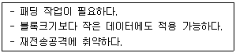
- ECB
- CBC
- CTR
- CFB
(정답률: 40%)
64. 다음은 어떤 접근제어 정책을 설명하고 있는가?
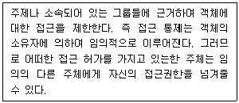
- MAC
- RBAC
- CBAC
- DAC
(정답률: 53%)
65. 다음 보기에서 설명하고 있는 보안 기술은 무엇인가?
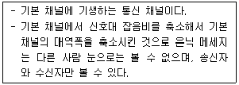
- SSH터널링
- 은닉채널
- 전송터널
- 이중터널
(정답률: 65%)
66. 다음 중 Kerberos 인증 프로토콜에 대한 설명으로 옳지 않은 것은?
- 중앙서버 개입 없이 분산형태로 인증을 수행한다.
- 티켓 안에는 자원 활용을 위한키와 정보가 포함되어 있다.
- 대칭키 알고리즘을 사용한다.
- TGT를 이용해 자원사용을 위한 티켓을 획득한다.
(정답률: 50%)
67. DES에 대한 설명으로 옳지 않은 것은?
- Feistel암호방식을 따른다.
- 1970년대 블록암호 알고리즘이다.
- 한 블록의 크기는 64비트이다.
- 한 번의 암호화를 거치기 위하여 10라운드를 거친다.
(정답률: 70%)
68. 국내기관에서 개발한 암호알고리즘은 무엇인가?
- AES
- DES
- ARIA
- IDEA
(정답률: 87%)
69. 소인수 분해 어려움에 기반 한 큰 안정성을 가지는 전자서명알고리즘은?
- ECC
- KCDSA
- Elgamal
- RSA
(정답률: 60%)
70. 다음 접근제어 모델 중에서 대상기반 접근제어가 아니라 특정한 역할들을 정의하고 각 역할에 따라 접근원한을 지정하고 제어하는 방식은?
- RBAC
- MAC
- DAC
- ACL
(정답률: 80%)
71. 다음 중 공개키 암호에 대한 설명으로 옳은 것은?
- 일반적으로 같은 양 데이터를 암호화한 암호문이 대칭키 암호보다 현저히 짧다.
- 대표적인 암호로 DES, AES가 있다.
- 대표적인 암호로 RSA가 있다.
- 대칭키 암호보다 수년전 고안된 개념이다.
(정답률: 25%)
72. 다음의 내용이 설명하고 있는 것은?
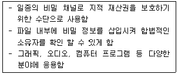
- 워터마크
- 암호화
- 전자서명
- 저작권
(정답률: 70%)
73. 다음 중 공인 인증서 구성요소 내용으로 올바르지 않은 것은?
- 공인 인증서 일련번호
- 소유자 개인키
- 발행기관 식별명칭
- 유효기간
(정답률: 52%)
74. 다음 중 Diffi-Hallman 알고리즘 특징이 아닌 것은?
- 단순하고 효율적이다.
- 인증 메시지에 비밀 세션 키를 포함하여 전달할 필요가 없다.
- 세션 키를 암호화한 전달이 필요하지 않다.
- 사용자 A와 B만이 키를 계산할 수 있기 때문에 무결성이 제공된다.
(정답률: 8%)
75. 공개키 기반구조(PKI)에 대한 설명으로 올바르지 못한 것은?
- 인증서버 버전, 일련번호, 서명, 발급자, 유효기간 등의 데이터 구조를 포함하고 있다.
- 공개키 암호시스템을 안전하게 사용하고 관리하기 위한 정보보호방식이다.
- 인증서 폐지 여부는 인증서폐지목록(CRL)과 온라인 인증서 상태 프로토콜(OCSP)확인을 통해서 이루어진다.
- 인증서는 등록기관(RA)에 의해 발행된다.
(정답률: 62%)
76. 다음 중 전자서명의 특징이 아닌 것은?
- 위조불가
- 서명자 인증
- 부인불가
- 재사용가능
(정답률: 64%)
77. 대칭키 암호 알고리즘이 아닌 것은?
- DES
- SEED
- 3DES
- DSA
(정답률: 67%)
78. 다음 중 스트림 암호 기술에 포함되지 않는 것은?
- OTP
- Peistel
- LFSR
- FSR
(정답률: 34%)
79. 다음 중 공개키 암호알고리즘 중에서 이산대수 문제에 기반 한 알고리즘이 아닌 것은?
- Schnorr
- DSA
- Rabin
- KCDSA
(정답률: 54%)
80. 다음은 암호메시지 공격 중에 어떤 공격인가?
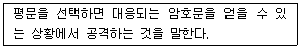
- 암호문 단독공격
- 알려진 평문공격
- 선택 평문공격
- 선택 암호문공격
(정답률: 56%)
5과목: 정보보안 관리 및 법규
81. 다음 중 정량적 위험분석 방법이 아닌 것은?
- 과거자료분석방법
- 확률분포법
- 수학공식법
- 시나리오법
(정답률: 37%)
82. 통제수행시점에 따른 분류 중 설명이 올바르지 않은 것은?
- 예방통제 : 발생 가능한 잠재적인 문제들을 식별하여 사전에 대처하는 통제방법
- 탐지통제 : 예방통제를 우회하는 문제점을 찾아내는 통제방법
- 교정통제 : 교정통제에 대표적인 방법은 로깅기능을 통한 감사증적이 있다.
- 잔류위험 : 사건발생가능성과 손실관점에서 위험을 허용하는 부분에 남아 있는 위험
(정답률: 27%)
83. OECD 정보보호 가이드라인에 포함되지 않는 내용은?
- 인식
- 책임
- 윤리
- 교육
(정답률: 31%)
84. 다음에서 설명하고 있는 인증 제도는 무엇인가?
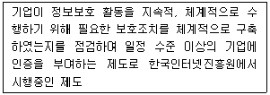
- PIMS
- PIPL
- ISMS
- PIA
(정답률: 65%)
85. 다음에 설명하고 있는 재난복구 대체처리 사이트는 무엇인가?
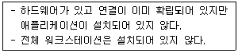
- 쿨사이트
- 핫사이트
- 웜사이트
- 콜드사이트
(정답률: 13%)
86. 다음 중 나라별, 지역별로 서로 다른 평가기준을 가짐에 따라 동일한 제품에 대한 중폭평가를 피하고 해결하기위한 정보보호시스템 공통평가기준을 무엇이라 하는가?
- ITSEC
- TCSEC
- CC
- OCRA
(정답률: 40%)
87. 다음 중 개인정보보호법에 대한 설명으로 올바른 것은?
- 개인정보보호 위원회 위원은 대통령이 임명한다.
- 정보주체란 개인정보를 생성, 처리하는 자를 의미한다.
- 개인정보는 어떤 경우에도 위탁이나 제 3자제공이 돼서는 안된다.
- 개인정보 목적 달성 후 1년간 보관한다.
(정답률: 35%)
88. ISMS인증에서 정보보호관리 과정에 포함되지 않는 것은?
- 정보보호 교육 및 훈련
- 경영진 책임 및 조직구성
- 위험관리
- 사후관리
(정답률: 25%)
89. 공인인증서 소멸사유에 포함되지 않는 것은?
- 공인인증서 효력이 정지된 경우
- 공인인증서 기관이 취소된 경우
- 공인인증서 유효기간이 경과한 경우
- 공인인증서 분실된 경우
(정답률: 19%)
90. 전자서명법상 전자서명의 효력으로 옳지 않은 것은?
- 다른 법령에서 문서 또는 서면에 서명, 서명날인 또는 기명날인을 요하는 경우 전자문서에 공인전자서명이 있는 때에는 이를 충족한것으로 본다.
- 공인전자서명이 있는 경우에는 당해 전자서명이 서명자의 서명, 서명날인 또는 기명날인이고, 당해 전자문서가 전자서명 된 후 그 내용이 변경되지 아니하였다고 추정한다.
- 공인전사저명외의 전자서명은 당사자 간의 약정에 따른 서명, 서명날인 또는 기명날인으로서의 효력을 가진다.
- 공인전자서명이 있는 경우에는 당해 전자서명이 서명자의 서명, 서명날인 또는 기명날인이고, 당해 전자문서가 전자서명 된 후 그 내용이 변경되지 아니한 것으로 본다.
(정답률: 39%)
91. 다음은 정보관리 측면에서 무엇에 대한 설명인가?
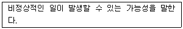
- 위협
- 결함
- 위험
- 취약성
(정답률: 44%)
92. 개인정보보호, 정보보호 교육에 대한 설명으로 옳지 않은 것은?
- 개인정보보호법에 따라 연1회이상 개인정보 교육을 의무적으로 한다.
- 정보보호 교육 시 자회사 직원만 교육하고 협력사는 제외한다.
- 정보통신망법에 따라 연2회 이상 개인정보 교육을 의무적으로 한다.
- 개인정보보호, 정보보안에 대한 교육은 수준별, 대상별로 나누어 교육한다.
(정답률: 35%)
93. 업무연속성(BCP) 5단계 순서를 올바르게 나열한 것은?
- 사업영향평가-복구전략개발-수행및테스트-범위설정 및 기획-복구수립계획
- 범위설정및기획-사업영향평가-복구전략개발-복구수립계획-수행및테스트
- 복구수립계획-범위설정및기획-사업영향평가-복구전략개발-수행및테스트
- 복구전략개발-복구수립계획-사업영향평가-범위설정및기획-수행및테스트
(정답률: 29%)
94. 개인정보보호법상 개인정보처리와 정보주체의 권리에 대한 설명으로 올바르지 않은 것은?
- 개인정보에 대한 열람은 가능하나 사본 발급은 요구할 수 없다.
- 개인정보처리로 인해 피해 발생이 될 경우 적법한 절차에 따라 구제 받을 수 있다.
- 개인정보처리에 대한 정보를 제공받을 수 있다.
- 개인정보처리 동의 여부, 범위 등을 선택하고 결정할 수 있다.
(정답률: 38%)
95. ‘정보통신망 이용촉진 및 정보보호등에 관한법률’ 에 따라 정보보호책임자를 지정해야 한다. 정보보호 최고책임자가 해야 할 업무가 아닌 것은?
- 정보보호관리체계의 수립 및 관리/운영
- 정보보호 취약점 분석/평가 및 개선
- 정보보호 사전 보안성 검토
- 주요 정보통신 기반시설 지정
(정답률: 50%)
96. ‘개인정보보호법’에 따라 개인정보가 유출되었음을 알게 되었을 때에는 지체 없이 정보주체에게 알려야 한다. 해당되지 않는 내용은?
- 유출된 시점과 그 경위
- 유출된 개인정보 항목
- 정보주체에게 피해가 발생한 경우 신고 등을 접수할 수 있는 담당자 및 연락처
- 개인정보처리자의 대응조치 및 피해구제절차
(정답률: 37%)
97. 개인정보영향평가 대상 범위에 포함되지 않는 것은?
- 구축 또는 변경하려는 개인정보파일 중 민감 정보, 고유 식별정보 5만 명 처리
- 구축 또는 운영하려는 개인정보파일이 내•외적으로 50만 명 이상연계
- 구축 또는 변경하려는 개인정보 파일 중 정보추체가 100만 명 이상
- 구축 또는 변경하려는 개인정보 파일 중 주민등록번호가 포함시
(정답률: 32%)
98. 다음 중 개인정보보호법상 개인정보 영향평가 시 고려 사항이 아닌것은?
- 처리하는 개인정보의 수
- 개인정보 제3자 제공여부
- 개인정보영향평가기관 능력
- 민감 정보 또는 고유 식별정보 처리여부
(정답률: 35%)
99. 개인정보보호법에서 개인정보처리자는 개인정보 열람요구서를 받은날부터 며칠 이내에 정보주체에게 해당 개인정보를 열람 할수 있도록 알려주어야 하는가?
- 3일
- 5일
- 7일
- 10일
(정답률: 10%)
100. 최근 개인정보보호법이 개정이 되었다. 개인정보보호법상 주민번호 수집 후 유출시 얼마의 과징금이 부과되는가?
- 1억
- 3억
- 5억
- 7억
(정답률: 60%)
운영체계 5계층은 컴퓨터 시스템의 하드웨어와 소프트웨어를 관리하는데 필요한 기능을 계층적으로 분리하여 구성한 것입니다.
1. 프로세서관리: CPU의 활용과 관련된 기능을 담당합니다. 프로세스 스케줄링, 인터럽트 처리, 멀티태스킹 등이 이에 해당합니다.
2. 메모리관리: 메모리의 할당과 관리를 담당합니다. 가상메모리, 페이지 교체, 메모리 보호 등이 이에 해당합니다.
3. 프로세스관리: 프로세스의 생성, 제거, 통신 등을 담당합니다.
4. 주변장치관리: 입출력 장치와의 인터페이스를 담당합니다. 디스크, 프린터, 마우스 등이 이에 해당합니다.
5. 파일관리: 파일 시스템과 관련된 기능을 담당합니다. 파일의 생성, 삭제, 보호, 공유 등이 이에 해당합니다.
따라서, "프로세서관리-메모리관리-프로세스관리-주변장치관리-파일관리"가 올바른 순서입니다.